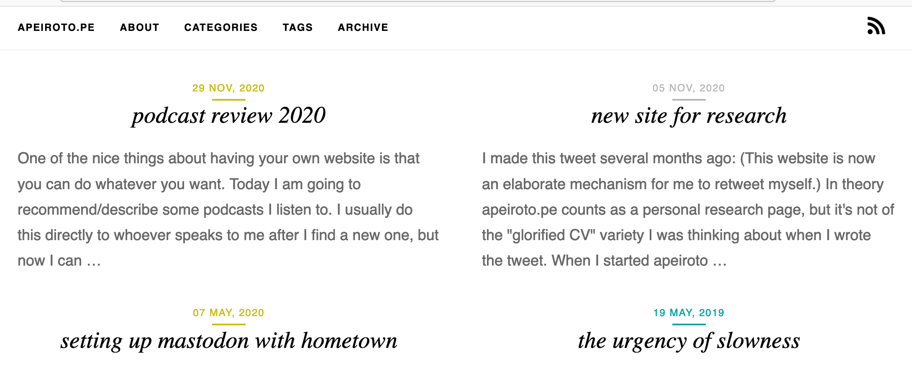

I have updated the design of the website! This started off as 'drop in a new Pelican theme and be done' and grew into a micro-project to do while confined to my parents house over Christmas (pandemic etc). I also watched lots of medium-to-terrible TV (GYNOTOPIA, SERIOUSLY?), which is a good accompaniment to making tiny tweaks in CSS and seeing what happens.
For posterity, the previous version of apeirotope looked like this:
... which was an edited version of the medius theme, which was designed to imitate Medium. Post example:
The new version, also for posterity (the internet is a flimsy place for memories) looks like this:

Post example:
The new design is a modified version of the voce theme - my fork is here. You can do a diff between my fork and the original one for the most comprehensive account of the edits I made, but I'll describe them in English here. Also, for comparison, here's what apeirotope would look like in mostly-plain voce:
It's not really a fair comparison because the voce theme uses tags carefully and sparingly, whereas I use them freely, and instead use categories (which it doesn't really use) to categorise my posts. You can see a much better version of the voce theme on its creator's personal page.
Particular edits I made:
- Obviously, get rid of the milieu of tags. I experimented with replacing them with my categories, but I didn't like the result. I settled with fully removing that section, and adding pages for Tags and Categories to the navigation bar.
- Removing more elements, I got rid of the "logo" area and (not shown) the copyright stuff at the bottom. As far as I can tell from 10s of searching, those types of copyright declarations are mostly for scaring people off plagiarising your stuff, but aren't actually necessary to legally assert copyright. Following up with a further 20s of searching, I'd probably put a CC-BY-SA license on this site if I had to. I haven't had any legal issues in the 5 years or so I've had the website, so maybe copyright will be abolished soon and I won't need to think further about this.
- It looks like I added an italic serif font, but he (Benjamin Lin, voce creator) seems to have done a nontrivial style update four days ago, which included removing it. This is funny to me because the previous update was in April, so I guess we were both spending part of our new years time editing the voce design. Hi Benjamin!
- It's ideally not visible at all, but I ripped out a bunch of surveillance-flavoured internals, including: anything to do with google analytics, and (hopefully) all calls to external sources, including fonts, bootstrap CSS, etc. Webfonts are hosted locally for apeirotope. Possibly didn't catch everything and maybe my website is slower now because a weak little OVH VPS is serving everything. My guess is that this site doesn't do enough traffic for that to be a real concern, but given the lack of analytics/me bothering to look at nginx logs ever, I have no idea.
- Introducing my "colour-coding categories" nonsense (which I already had in medius, but required rejigging given the new templates in voce). This was probably the most complicated part because I sort of understand CSS, but not well enough to readily diagnose why certain styles are overriding each other. Concessions had to be made, but I am fairly happy with the result.
- Directly edited minified bootstrap CSS to remove a weird navy colour that kept appearing in my unflavoured links. Numerous other minor style edits, including removing that (admittedly lovely) turquoise colour, and making things generally smaller.
- The tags page sorts by number of posts, not alphabetically. Nobody should look at the tags page, though. I have a link-rot issue where I don't want to modify categories (since they define absolute paths to posts), but it's open season on tags and some day I may do a pass on de-duplicating them.
- The archives page (new!) only segregates posts by month if there are more than 4 in a year. I am most proud of this edit because it required writing some Jinja, which first required learning the word "Jinja" so as to upgrade my search queries from "if statement pelican".
In summary, this was NOT procrastination from generating other types of content for the website.